Ensayo vocal
Piano · Voz cercana
Fotos, videos y momentos de directo reunidos como portfolio visual de Sofía Rico.
Ensayos, directos y fragmentos interpretativos reunidos como portfolio audiovisual.
Piano · Voz cercana
Escena · Interpretación
Cover · Formato social
Proceso · Voz · Cercanía
Luz · Directo · Presencia
Formato social · Emoción
Piano · Ensayo · Timbre
Escena · Gesto · Voz
Cover · Cámara · Directo
Una selección de retratos, escena y concierto para dossier, prensa y promoción artística.
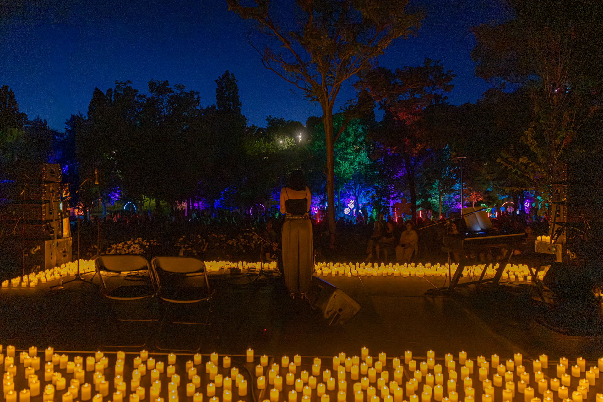
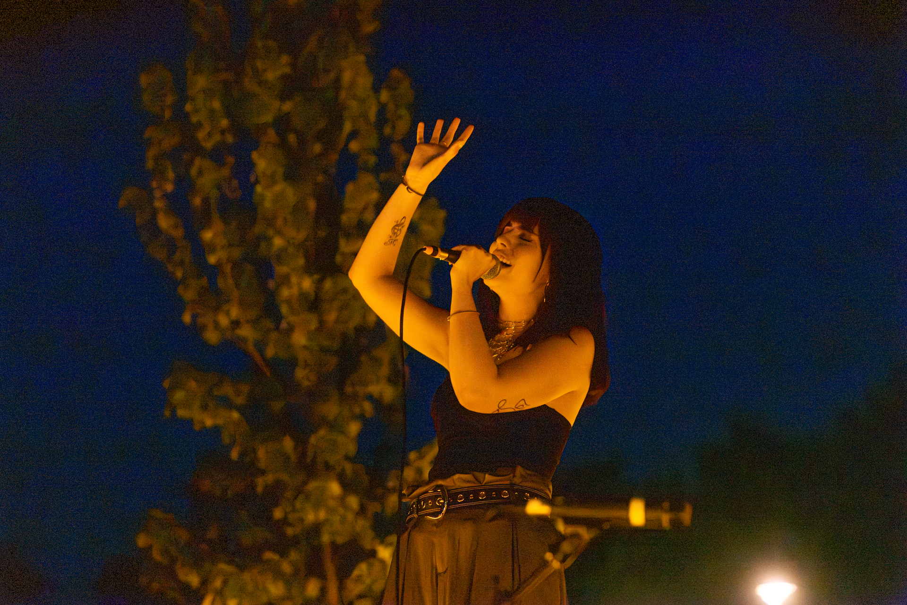
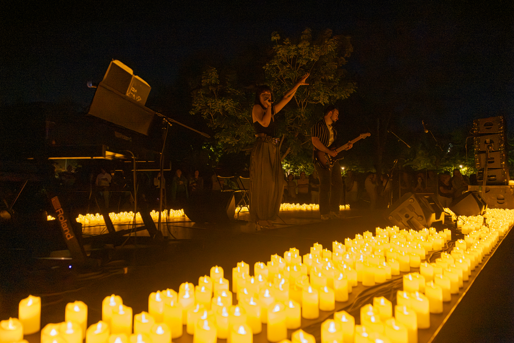
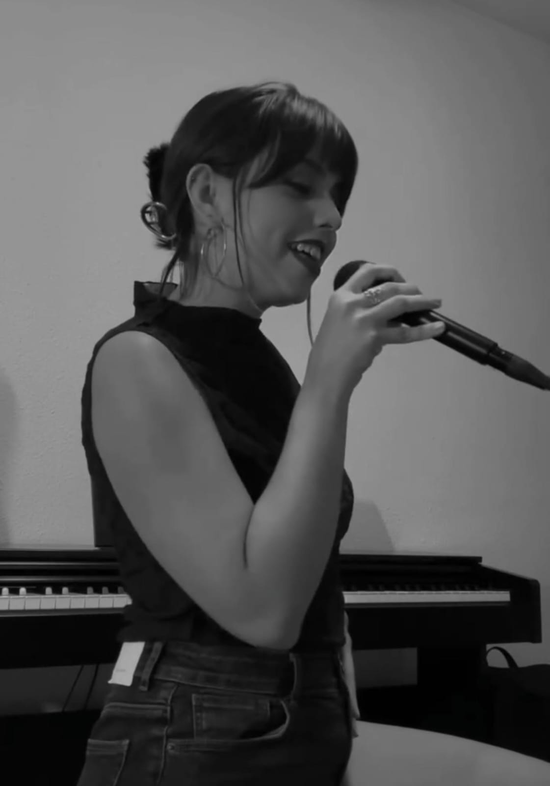
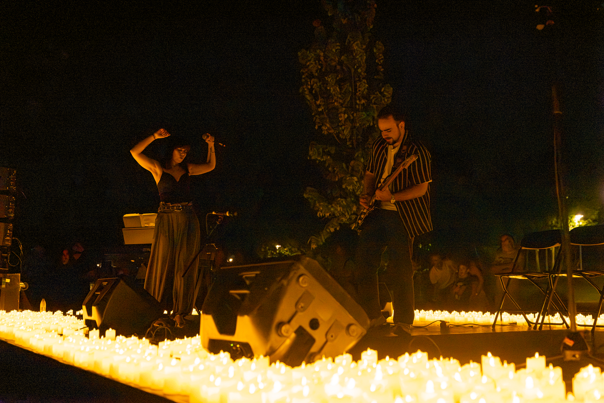
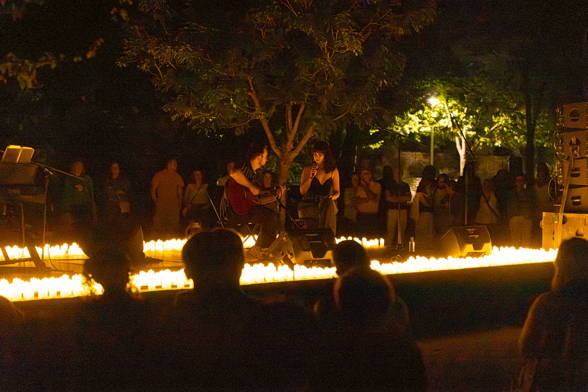
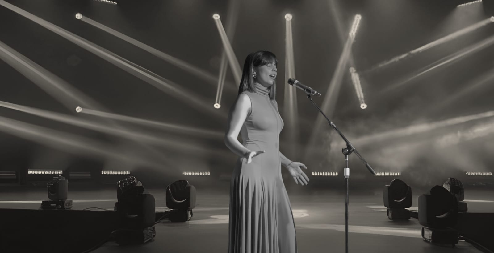
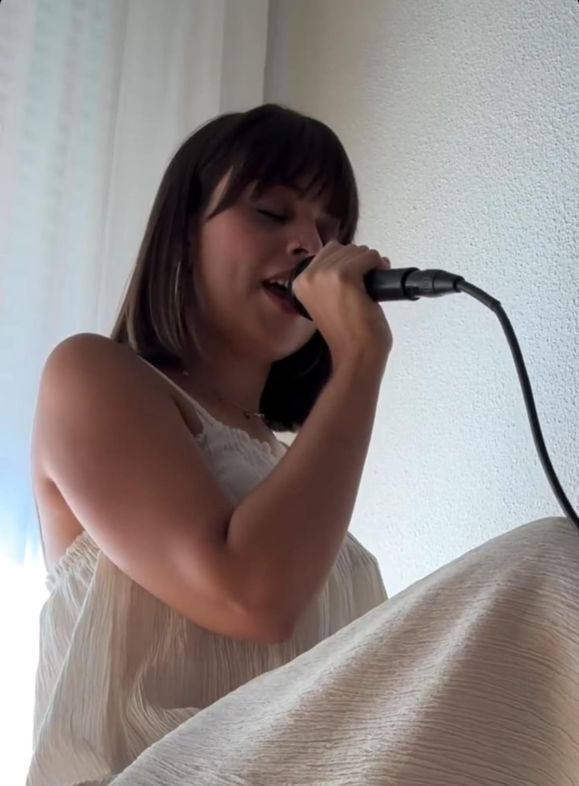
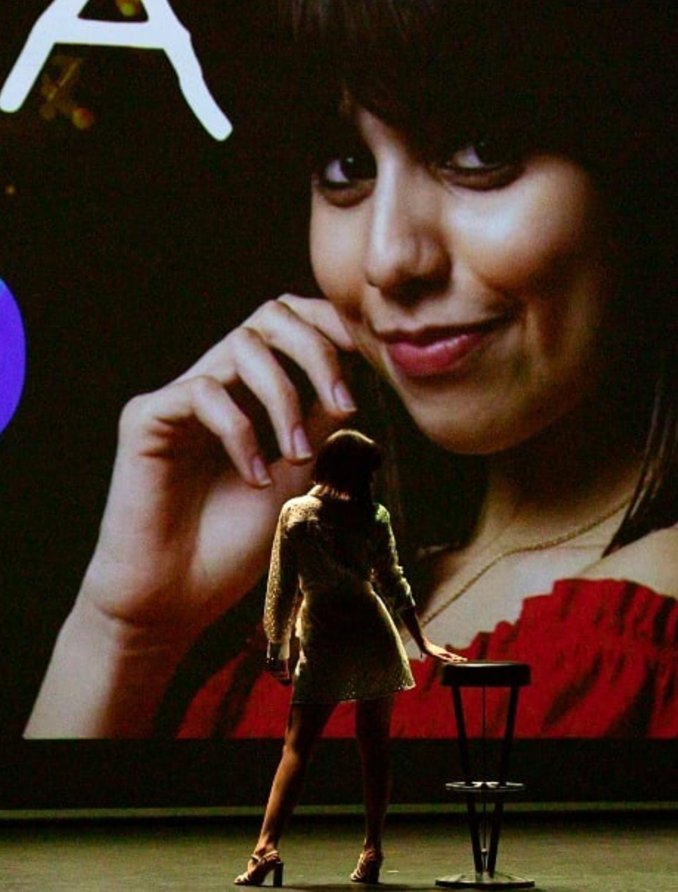
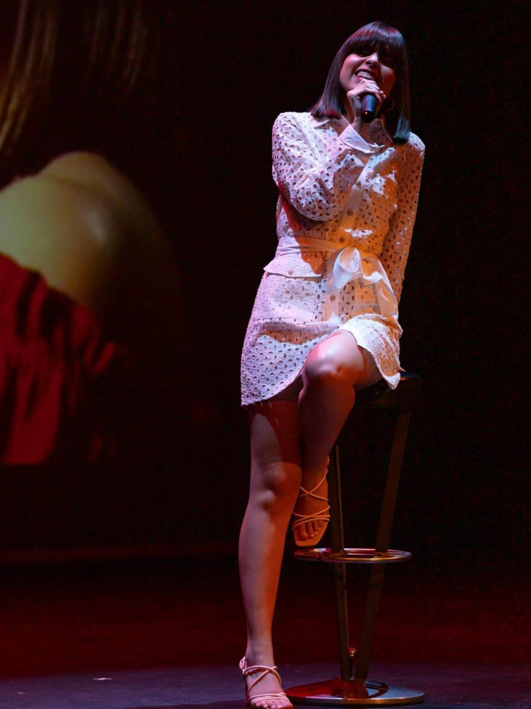
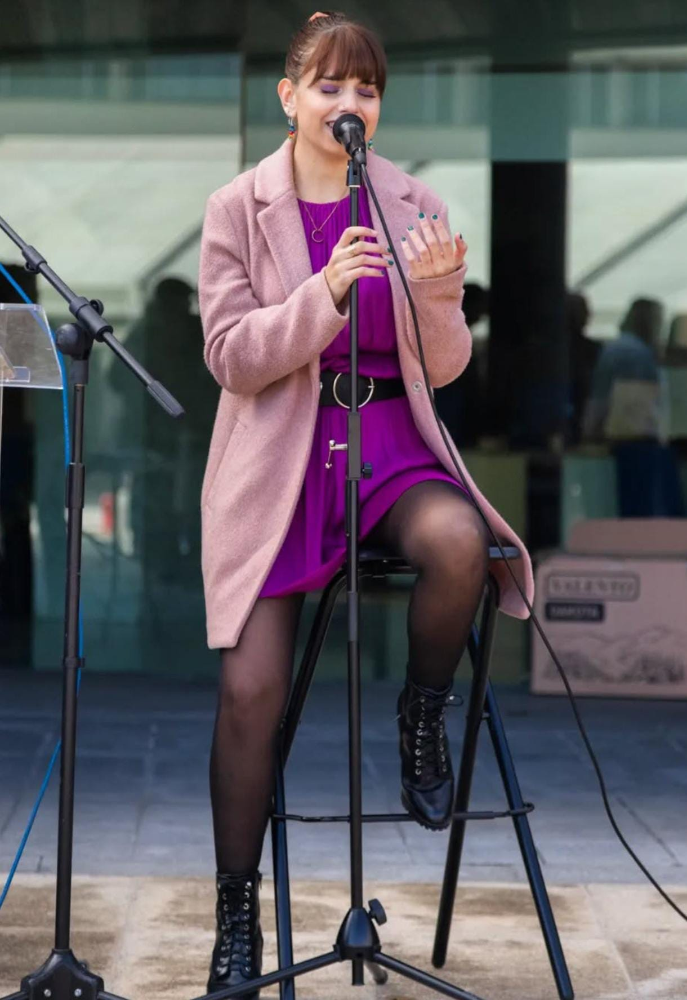
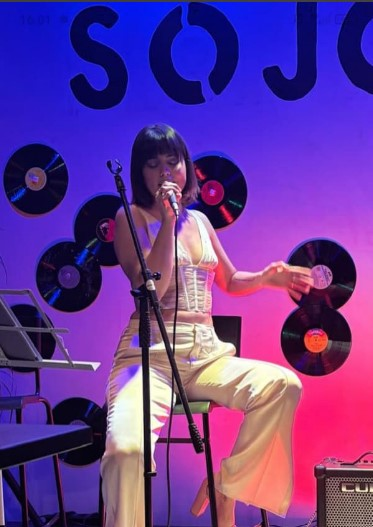
Tomas breves para valorar timbre, intención y textura vocal.
Muestra 01
Muestra 02
Muestra 03